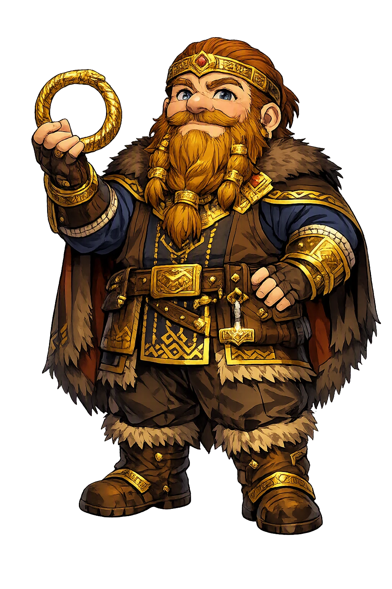
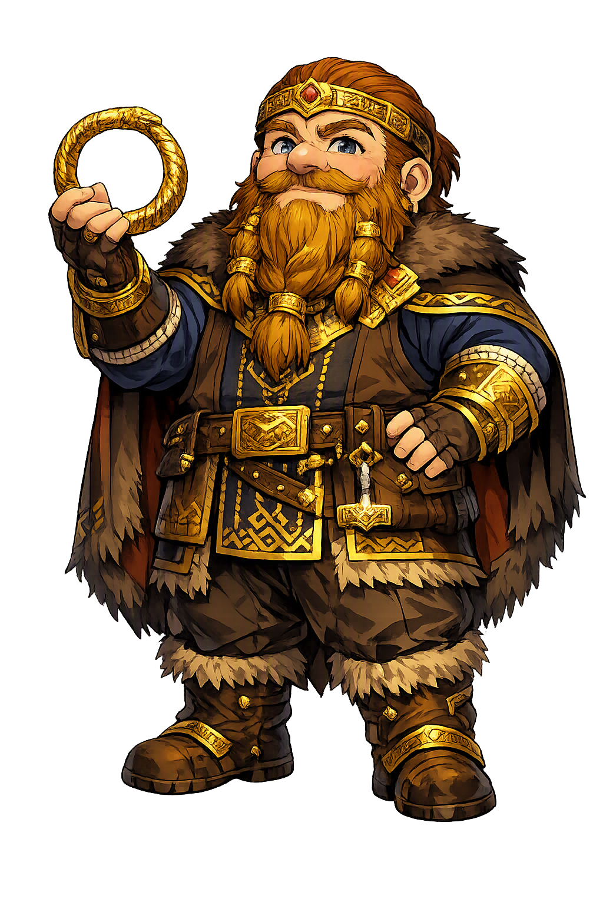

Unicode restoration and ASCII comparison
ᛋᛁᚾᛏᚱᛁ
The name in its original Norse form. Sindri (ᛋᛁᚾᛏᚱᛁ) is attested in the source tradition — “Sparkling”. Its original diacritics and script distinctions carry the full phonetic and orthographic weight of the source tradition.
sindri
The plain sindri form is identical to the Unicode restoration. Because this name is already written in Latin letters, no diacritics, stress, or script information were lost — only capitalization differs.
Sindri
The Unicode restoration does not need to recover lost marks for Sindri. Its value is canonical spelling and consistent cataloguing, not the reconstruction of erased orthography. The domain is readable as-is to both DNS and humanity.
Sindri.com → sindri.com
The non-ASCII characters in Sindri are encoded while the ASCII remains visible. To the DNS, it is Punycode. To humanity, it is Sindri.
How Sindri travels from ancient script to the modern URL
Owned, ideal, and ASCII forms of Sindri
Sindri
Restores ᛋᛁᚾᛏᚱᛁ. The full Unicode restoration. sindri.com is not in the PuniCodex collection — it is watched for release; if it drops, this temple upgrades to an owned flagship.
How Sindri was spoken
The Forge of the Three Treasures
Sindri is the dwarf at the anvil while his brother [[brokkr|Brokkr]] works the bellows: the smith who took Loki's wager and cast, in three heats, the golden-bristled boar Gullinbursti for Freyr, the ring Draupnir for Óðinn, and the hammer Mjǫllnir for Þórr — the greatest single afternoon's work in the northern corpus, done to win a bet staked on a trickster's head. His name is his trade: sindra, 'to sparkle', the forge-word for metal throwing off sparks. And Völuspá gives him a second life beyond Snorri's forge-scene: north on Niðavellir stands a hall of gold belonging to the kindred of Sindri, a dwarf chieftain of the verse tradition whose family owns the golden house.
Brokkr's station and the wager's condition: the bellows must blow without pause through each casting, and the one moment they faltered — a fly's sting between the eyes — shortened the hammer's handle forever.
The boar with bristles of gold, cast from a pigskin in the first heat and given to Freyr — Gold-Bristle, who runs through sky and sea faster than any horse and lights the darkest night with his shining mane.
The gold arm-ring cast in the second heat and given to Óðinn — the Dripper, from which eight rings of equal weight drop every ninth night; Óðinn laid it on Baldr's pyre, and Baldr sent it back from Hel.
The hammer cast in the third heat and given to Þórr — it never misses, never breaks, and always returns to the hand, yet its handle is a finger too short: the one flaw in the corpus's greatest treasure, made by an interrupted bellows-stroke.
Stories of Sindri
Sindri's dossier is one long scene in Snorri and one stanza in Völuspá — a forge and a hall. The Prose Edda gives him the wager that produced the gods' three greatest treasures; the Poetic Edda gives him a golden house in the dwarf-fields and a kindred to fill it. Between the two stands the corpus's most consequential craftsman: everything the Æsir trust in the last battle came off his anvil in a single afternoon.
It begins with a crime: Loki, for mischief, cuts off all the hair of Sif, Þórr's wife. Þórr seizes him and would break every bone, and Loki swears to get the svartálfar to make hair of gold for Sif that will grow like living hair. He goes first to the sons of Ívaldi, who make the golden hair and two more treasures — the ship Skíðblaðnir for Freyr and the spear Gungnir for Óðinn. Then, flushed with success, Loki goes to the dwarf Brokkr and wagers his own head that Brokkr's brother Sindri cannot make three treasures just as good.
The bet is the whole engine of the chapter: a trickster's tongue staked against a smith's hands. Brokkr accepts, and the brothers go to the forge with the terms set — Sindri lays the metal, Brokkr works the bellows, and the bellows must not stop blowing until the work comes out of the fire.
Sindri lays a pigskin in the forge and tells Brokkr to blow and never cease. A fly settles on Brokkr's hand and stings, but the bellows do not stop: out comes a boar with bristles of gold, Gullinbursti. Next Sindri lays gold in the fire; the fly returns and stings Brokkr's neck, harder, but the bellows do not stop: out comes the gold ring Draupnir. Last Sindri lays iron in the fire — and now, Snorri says, the smith himself fears the work will fail if the blowing falters. The fly settles between Brokkr's eyes and stings the eyelids so the blood runs down and blinds him; Brokkr sweeps the fly away with his hand, and the bellows fall silent for one instant. When the iron comes out it is a hammer — and its handle is short by a finger's breadth.
The fly, of course, is Loki, who cannot win the wager fairly and tries to spoil it instead. The chapter's precision is unforgettable: two perfect treasures and one marred, and the marred one — the hammer Mjǫllnir — is the greatest of the six. The sabotage succeeds exactly as far as the handle and no farther.
The brothers bring their three treasures to Ásgarðr, and the Æsir sit in judgment with Óðinn, Þórr, and Freyr as assessors. To Freyr goes the boar, which runs through air and sea faster than any horse and lights the night with its golden bristles; to Óðinn the ring, which drips eight rings of equal weight every ninth night; to Þórr the hammer — it never misses what he throws at, it never breaks, it always returns to his hand, and it shrinks small enough to carry inside his shirt. Its one fault is the short handle. The judgment is unanimous: the hammer is the best of all the treasures, the surest defense against the frost-giants, and the brothers have won the wager.
Loki offers to ransom his head, but Brokkr refuses every price. When Loki tries to flee on his sky-shoes, Þórr catches him. Then comes the trickster's last legalism: the head was staked, but not one inch of the neck. Brokkr cannot take the head without touching the neck — so he takes an awl instead and sews Loki's lips together, and the thread, Snorri says, is called Vartari. The smith does not get his stake; he gets something better, the silencing of the tongue that staked it.
The verse tradition knows a grander Sindri than Snorri's forge-hand. Völuspá, in its survey of the world's dwellings, counts a hall that stands north on Niðavellir, made of gold, belonging to the kindred of Sindri — beside the giant Brimir's beer-hall at Ókólnir. Here Sindri is no lone craftsman but a dwarf chieftain, the head of a family rich enough to roof its house in the metal his name throws off as sparks.
The dwarf þulur preserved with Skáldskaparmál keep the name in the catalogues of dwarf heiti, and the manuscript tradition splits on the forge-scene itself: where part of the tradition names Brokkr's brother Sindri, another part calls him Eitri, and the handbooks read the two as one smith under two forge-names. The name itself is the trade: sindra is 'to sparkle, throw off sparks', sindr is the slag and spark of the forge — kin to Old English sinder and the modern English cinder, the cooled spark of the smith's fire.
Sindri is the Edda's shortest sermon on how perfection fails. The gods' three greatest treasures are made in one afternoon by a smith whose name is a forge-word for sparks, and two of them are flawless. The third — the best, the one the Æsir will trust in the last battle — is marred by a single instant: a fly, an eyelid, a held breath of the bellows, and the handle is short forever. The tradition does not call the hammer ruined; it calls it the finest thing ever forged, short handle and all. That is the forge's verdict and the story's mercy: the masterpiece is not the work that never faltered but the work that survived its interruption. Loki wins the sting and loses the wager. Sindri wins everything except the head he was promised — and takes the trickster's voice instead, one stitch at a time, with an awl. In a mythology that ends in fire, the smith who arms the gods gets the corpus's most practical blessing: his work holds, and no one remembers the fly who won.
Enter Extended Lore